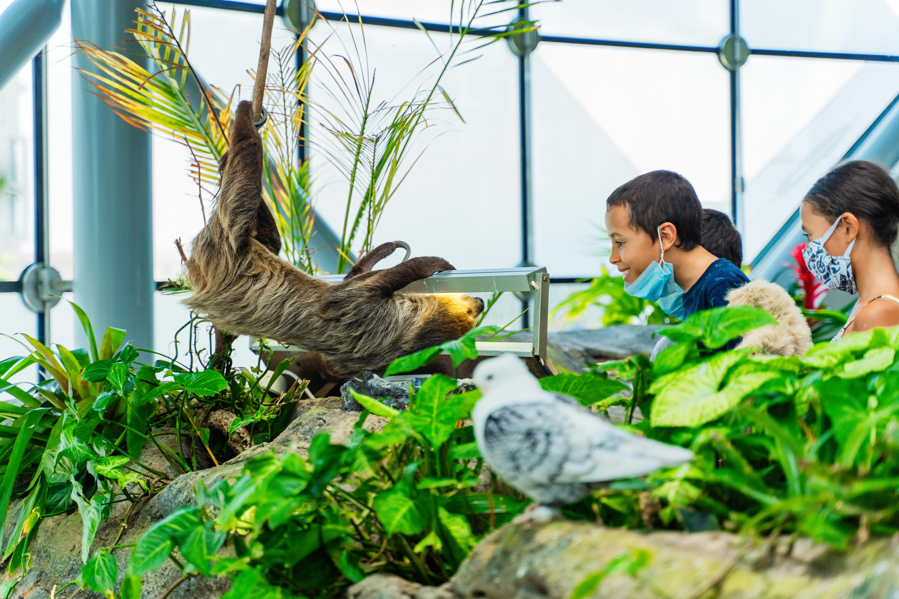

Resources
Help Sloths Keep Hanging Around!
Sloths might be slow, but they need fast action to protect their homes and their future. Here’s how YOU can make a difference:
- Adopt a Sloth: You can become a sloth superhero by adopting one through organizations like The Sloth Conservation Foundation or The Sloth Institute. Your support helps rescue, feed, and protect these furry friends.
- Be a Habitat Hero: Love trees? So do sloths! Supporting rainforest conservation means sloths get to keep their leafy homes.
- Spread the Word: Share sloth facts (like how they only poop once a week!) and raise awareness about their plight. YOUR VOICE MAKES A DIFFERENCE!
Citations for Images:
- Home page image by Minke Wink from pixabay
- About page image by lila_getupft from pixabay
- About page image by David Gomez from pexels
- Resource page image by Denys Gromov from pexels
- Resource page image by Alejandro Om from pexels